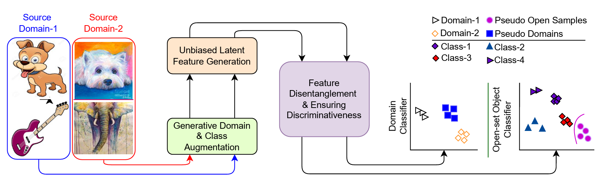
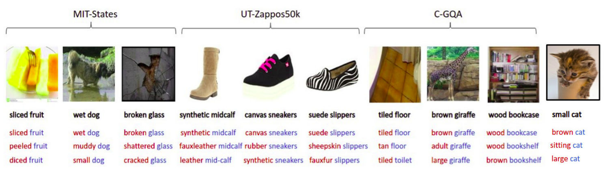

In 2022, I graduated from Indian Institute of Technology Bombay (IITB), with a Bachelors in Electrical Engineering. I also completed two minor degrees in Computer Science and Engineering, and Machine Learning and Data Science. I did my Bachelor Thesis on Compositional Zero Shot Learning, where I was advised by Professor Biplab Banerjee.
I'm deeply fascinated by the synergy between different types of data including text, images, videos, audio, and more, mirroring a subset of human senses. Eventually, I want to work at this big intersection. As a stepping stone towards this goal, I am currently studying the interaction between vision and language.
Publications

Beyond Boundaries: A Novel Data-Augmentation Discourse for Open Domain Generalization
Shirsha Bose, Ankit Jha, , Biplab Banerjee
TMLR | Transactions on Machine Learning Research
paper
cite

Multi-Stage Semantic Graph Embeddings for Compositional Zero-Shot Learning
, Ruchika Chavhan, Ushasi Chaudhuri, Biplab Banerjee
paper
cite